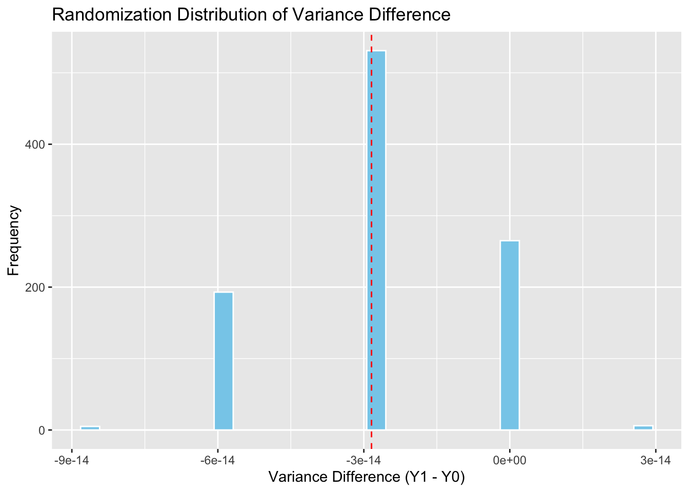

This assignment deals with causal inference with heterogeneous effects. The topic is discussed in chapter 09 of the textbook. If you have any questions about the assignment, feel free to email me at danilo.freire@emory.edu.
Good luck!
Questions
Define the following concepts and answer the questions:
Define CATE. Is a Complier average causal effect (CACE) an example of a CATE? CATE, or Conditional Average Treatment Effect, is the average effect of a treatment for a specific subgroup defined by covariates (e.g., age, income). It helps understand how treatment effects vary across different segments of a population. CACE is not a CATE; rather, it estimates the average treatment effect for compliers in an instrumental variables setting, which is a subgroup based on treatment adherence rather than pre-treatment covariates.
What is an interaction effect? An interaction effect occurs when the effect of one independent variable on the outcome depends on the level of another variable. This means that the variables do not have purely additive effects, but instead modify each other’s impact. Interaction effects are key to understanding heterogeneity in causal relationships.
Describe the multiple comparisons problem and the Bonferroni correction. What other ways are there to correct the multiple comparisons problem? (Feel free to use other reference materials to answer this question) The multiple comparisons problem arises when performing many statistical tests, increasing the chance of finding a significant result just by chance (Type I error). The Bonferroni correction addresses this by dividing the significance level (e.g., 0.05) by the number of comparisons to keep the overall error rate low. Other correction methods include the Holm-Bonferroni method, False Discovery Rate (FDR) control like the Benjamini-Hochberg procedure, and permutation-based adjustments.
Suppose that a researcher compares the CATE among two subgroups, men and women. Among men (\(N = 100\)), the ATE is estimated to be \(8.0\) with a standard error of \(3.0\), which is significant at \(p < 0.05\). Among women (\(N = 25\)), the CATE is estimated to be \(7.0\) with an estimated standard error of \(6.0\), which is not significant, even at the 10% significance level. Critically evaluate the researcher’s claim that “the treatment only works for men; for women, the effect is statistically indistinguishable from zero”. In formulating your answer, address the distinction between testing whether a single CATE is different from zero and testing whether two CATEs are different from each other. The researcher’s claim that “the treatment only works for men; for women, the effect is statistically indistinguishable from zero” reflects a misinterpretation of statistical inference and subgroup comparisons.
While it is true that the treatment effect is statistically significant for men (ATE = 8.0, SE = 3.0, p < 0.05) and not for women (CATE = 7.0, SE = 6.0, not significant), this does not imply a statistically significant difference between the two groups. Statistical significance within a group does not imply a statistically significant difference between groups. To assess whether the treatment effect differs by gender, the researcher would need to formally test the interaction effect (i.e., whether the difference between 8.0 and 7.0 is significantly different from zero, accounting for the pooled variance), and in this case, the large standard error for women suggests the difference likely isn’t significant.
In short: “Significant vs. not significant” is not the same as “significantly different”, and concluding treatment heterogeneity without testing the interaction is statistically invalid.
For questions 3 to 5, consider the following table and data. In their 2004 study of racial discrimination in employment markets, Bertrand and Mullainathan sent resumes with varying characteristics to firms advertising job openings. Some firms were sent resumes with putative African American names, while other firms received resumes with putatively Caucasian names. The researchers also varied other attributes of the resume, such as whether the resume was judged to be of high or low quality (based on labor market experience, career profile, gaps in employment, and skills listed). The table below shows the rate at which applicants were called back by employers, by the city in which the experiment took place and by the randomly assigned attributes of their applications.
City
Resume Quality
Race
% Received call
(N)
Boston
Low-quality
Black
7.01
(542)
Boston
Low-quality
White
10.15
(542)
Boston
High-quality
Black
8.50
(541)
Boston
High-quality
White
13.12
(541)
Chicago
Low-quality
Black
5.52
(670)
Chicago
Low-quality
White
7.16
(670)
Chicago
High-quality
Black
5.28
(682)
Chicago
High-quality
White
8.94
(682)
For each city, interpret the apparent treatment effects of a black name and a low-quality resume on the probability of receiving a follow-up call. In Boston, having a Black-sounding name significantly reduced the likelihood of receiving a callback. Among low-quality resumes, White applicants received callbacks at a rate of 10.15%, while Black applicants received only 7.01%, reflecting a gap of 3.14 percentage points. This racial gap widened for high-quality resumes, where callback rates were 13.12% for White applicants and 8.50% for Black applicants—a difference of 4.62 percentage points. In terms of resume quality, higher-quality resumes increased callback rates for both racial groups, but the benefit was greater for White applicants. White applicants saw a 2.97 percentage point increase in callbacks when moving from low- to high-quality resumes, compared to just 1.49 percentage points for Black applicants.
In Chicago, a similar pattern of racial discrimination emerges, though the differences are slightly smaller. Among low-quality resumes, White applicants had a callback rate of 7.16% compared to 5.52% for Black applicants, yielding a gap of 1.64 percentage points. For high-quality resumes, the callback rate was 8.94% for White applicants and 5.28% for Black applicants—a 3.66 percentage point gap. Interestingly, resume quality had little to no positive effect for Black applicants in Chicago. In fact, Black applicants with high-quality resumes received slightly fewer callbacks (5.28%) than those with low-quality resumes (5.52%), a difference likely due to random variation. Meanwhile, White applicants saw a clear benefit from better resumes, with a 1.78 percentage point increase in callback rates.
Taken together, these patterns suggest that Black-sounding names were consistently penalized in the hiring process in both cities, and that improvements in resume quality disproportionately benefited White applicants. The results underscore how racial bias can persist even in the presence of strong qualifications, particularly in the case of high-quality resumes where the racial callback gap actually widened.
Propose a regression model that assesses the effects of the treatments, interaction between them, and interactions between the treatments and the covariate, city, where city is coded 1 for subjects in Boston and 0 for Chicago. Define your variables clearly. To evaluate how race, resume quality, and city affect the likelihood of receiving a callback, we can use a regression model that includes both main effects and interaction terms. The outcome variable is whether an applicant received a callback (Callback), coded as 1 if they did and 0 otherwise. The key explanatory variables are: Black, a binary variable equal to 1 if the applicant has a Black-sounding name (0 if White); HighQual, a binary variable equal to 1 if the resume is high quality (0 if low quality); and Boston, a binary covariate equal to 1 if the job application was sent to a Boston employer (0 if Chicago).
The model includes not only these three main effects, but also their interactions to assess whether the effects of race and resume quality vary by city. Specifically, the model includes interaction terms for Black × HighQual, Black × Boston, HighQual × Boston, and a three-way interaction Black × HighQual × Boston. These terms allow us to estimate how the combination of being Black and having a high-quality resume affects outcomes differently in Boston versus Chicago.
This regression framework enables a nuanced analysis of discrimination in hiring by testing whether racial disparities in callback rates are influenced by resume quality and whether these patterns differ between cities. For example, the coefficient on Black reflects the effect of having a Black-sounding name in Chicago for applicants with low-quality resumes, while the interaction terms reveal whether this effect changes in Boston or for higher-quality resumes. By including these interactions, the model captures both the direct treatment effects and the contextual factors that may moderate them.
Estimate the parameters in your regression model and interpret the results. (This can be done by hand based on the percentages given in the table.) Based on the callback rates in the table, we can manually estimate the parameters of the proposed regression model by computing differences in means across the eight groups (defined by combinations of city, race, and resume quality). We’ll treat Chicago, low-quality, White-sounding resumes as the reference group. This group has a callback rate of 7.16%, so our intercept (β₀) is 0.0716.
Next, we estimate the effect of a Black-sounding name in Chicago with a low-quality resume (β₁). In this condition, the callback rate is 5.52%, so the effect of being Black (compared to White) is 0.0552 − 0.0716 = −0.0164. For resume quality (β₂), we compare high- and low-quality resumes for White applicants in Chicago: 8.94% − 7.16% = +0.0178. The main effect of being in Boston (β₃) is estimated by comparing the White, low-quality group in Boston (10.15%) to the same group in Chicago (7.16%): 10.15% − 7.16% = +0.0299.
To estimate the two-way interaction between being Black and having a high-quality resume in Chicago (β₄), we compare the difference in callback rates for Black applicants by resume quality: 5.28% (high) − 5.52% (low) = −0.0024, and subtract the main effect of resume quality for Whites (+0.0178), yielding −0.0202. This suggests that Black applicants in Chicago did not benefit from higher resume quality. The interaction between race and city (β₅) is the difference in the race gap between Boston and Chicago for low-quality resumes: (7.01 − 10.15) − (5.52 − 7.16) = −3.14% − (−1.64%) = −0.0150. This indicates the racial gap is 1.5 percentage points worse in Boston. Similarly, the interaction between resume quality and city (β₆) for White applicants is (13.12 − 10.15) − (8.94 − 7.16) = 2.97% − 1.78% = +0.0119, showing that resume improvements were slightly more rewarded in Boston. Finally, the three-way interaction (β₇) can be estimated by comparing the differential quality boost for Black applicants in Boston versus Chicago: (8.50 − 7.01) − (5.28 − 5.52) = 1.49% − (−0.24%) = +0.0173, suggesting a modestly better return to resume quality for Black applicants in Boston, though still small.
In sum, the regression estimates reveal consistent racial disparities in callback rates, with Black applicants receiving fewer callbacks overall, and especially in Boston. Resume quality had a positive impact for White applicants in both cities, but offered little to no advantage for Black applicants, particularly in Chicago. The interaction effects suggest that resume quality reinforces inequality, providing greater benefits to White applicants and doing little to offset racial bias in hiring.
Rind and Bordia studied the tipping behaviour of lunchtime patrons of an “upscale Philadelphia restaurant” who were randomly assigned to four experimental groups. One factor was server sex (male or female), and a second factor was whether the server draws a “happy face” on the back of the bill presented to customers. Download the data located at https://github.com/danilofreire/qtm385/blob/main/assignments/09-assignment/Rind_Bordia_JASP_1996.csv and read the data into R.
Suppose you ignored the sex of the server and simply analysed whether the happy face treatment has heterogeneous effects. Use randomisation inference to test whether \(\text{Var}(\tau_i) = 0\) by testing whether \(\text{Var}(Y_i(1)) = \text{Var}(Y_i(0))\). Construct the full schedule of potential outcomes by assuming that the treatment effect is equal to the observed difference-in-means between \(Y_i(1)\) and \(Y_i(0)\). Interpret your results.
# Load necessary packagelibrary(readr)# Read the data from GitHuburl <-"https://raw.githubusercontent.com/danilofreire/qtm385/main/assignments/09-assignment/Rind_Bordia_JASP_1996.csv"rind_data <-read_csv(url)
Rows: 89 Columns: 5
── Column specification ────────────────────────────────────────────────────────
Delimiter: ","
dbl (5): female, happyface, tip, xhappy, tipround
ℹ Use `spec()` to retrieve the full column specification for this data.
ℹ Specify the column types or set `show_col_types = FALSE` to quiet this message.
# View the first few rows of the datasethead(rind_data)
The following objects are masked from 'package:stats':
filter, lag
The following objects are masked from 'package:base':
intersect, setdiff, setequal, union
library(ggplot2)# Load and prepare the dataurl <-"https://raw.githubusercontent.com/danilofreire/qtm385/main/assignments/09-assignment/Rind_Bordia_JASP_1996.csv"rind_data <-read_csv(url)
Rows: 89 Columns: 5
── Column specification ────────────────────────────────────────────────────────
Delimiter: ","
dbl (5): female, happyface, tip, xhappy, tipround
ℹ Use `spec()` to retrieve the full column specification for this data.
ℹ Specify the column types or set `show_col_types = FALSE` to quiet this message.
# Clean and rename variablesdata <- rind_data %>%mutate(happyface =as.integer(happyface), # Treatment: 1 = happy face, 0 = no facetip = tip # Outcome: tip percentage )# Compute observed average treatment effect (ATE)obs_ATE <-mean(data$tip[data$happyface ==1], na.rm =TRUE) -mean(data$tip[data$happyface ==0], na.rm =TRUE)# Construct full schedule of potential outcomes under constant treatment effectdata <- data %>%mutate(Y0 =ifelse(happyface ==0, tip, tip - obs_ATE),Y1 =ifelse(happyface ==1, tip, tip + obs_ATE) )# Compute observed variance differenceobs_var_diff <-var(data$Y1, na.rm =TRUE) -var(data$Y0, na.rm =TRUE)# Randomization inference to test Var(Y1) = Var(Y0)set.seed(123)n_sims <-1000var_diffs <-numeric(n_sims)for (i in1:n_sims) { shuffled <-sample(data$happyface) Y1_i <-ifelse(shuffled ==1, data$tip, data$tip + obs_ATE) Y0_i <-ifelse(shuffled ==0, data$tip, data$tip - obs_ATE) var_diffs[i] <-var(Y1_i, na.rm =TRUE) -var(Y0_i, na.rm =TRUE)}# Calculate two-sided p-valuep_value <-mean(abs(var_diffs) >=abs(obs_var_diff))# Output resultscat("Observed Variance Difference:", round(obs_var_diff, 4), "\n")
Observed Variance Difference: 0
cat("P-value from Randomization Inference:", round(p_value, 4), "\n")
P-value from Randomization Inference: 0.735
# Plot randomization distributionggplot(data.frame(var_diffs), aes(x = var_diffs)) +geom_histogram(bins =30, fill ="skyblue", color ="white") +geom_vline(xintercept = obs_var_diff, color ="red", linetype ="dashed") +labs(title ="Randomization Distribution of Variance Difference",x ="Variance Difference (Y1 - Y0)",y ="Frequency" )

Write down a regression model that depicts the effect of the sex of the waitstaff, whether they write a happy face on the bill, and the interaction of these factors. To analyze how the sex of the waitstaff and the act of drawing a happy face on the bill influence tipping behavior, we can specify a linear regression model that includes both main effects and their interaction. The outcome variable is the tip percentage received by each server. The model includes a binary variable for server sex, where Female is coded as 1 for female servers and 0 for male servers, and a binary treatment variable HappyFace, coded as 1 if the server drew a happy face on the bill and 0 otherwise. Additionally, the model includes an interaction term between Female and HappyFace to capture whether the effect of drawing a happy face depends on the server’s sex.
This specification allows us to interpret the coefficients as follows: the intercept represents the average tip for male servers who did not draw a happy face. The coefficient on Female captures the difference in tip percentage between female and male servers when no happy face is drawn, while the coefficient on HappyFace reflects the effect of drawing a happy face for male servers. The interaction term estimates the additional or differential effect of the happy face when the server is female. Together, this model provides a framework for assessing whether the happy face treatment is more or less effective depending on the gender of the waitstaff.
Estimate the regression model in question 07 and test the interaction between waitstaff sex and the happy face treatment. Is the interaction significant?
# Load necessary packagelibrary(readr)# Load the dataurl <-"https://raw.githubusercontent.com/danilofreire/qtm385/main/assignments/09-assignment/Rind_Bordia_JASP_1996.csv"rind_data <-read_csv(url)
Rows: 89 Columns: 5
── Column specification ────────────────────────────────────────────────────────
Delimiter: ","
dbl (5): female, happyface, tip, xhappy, tipround
ℹ Use `spec()` to retrieve the full column specification for this data.
ℹ Specify the column types or set `show_col_types = FALSE` to quiet this message.
# Fit regression model with interactionmodel <-lm(tip ~ female * happyface, data = rind_data)# Display regression summarysummary(model)
Call:
lm(formula = tip ~ female * happyface, data = rind_data)
Residuals:
Min 1Q Median 3Q Max
-21.406 -5.726 -0.684 5.286 39.419
Coefficients:
Estimate Std. Error t value Pr(>|t|)
(Intercept) 21.406 2.287 9.360 1.01e-14 ***
female 6.378 3.163 2.016 0.0469 *
happyface -3.630 3.163 -1.147 0.2544
female:happyface 8.887 4.447 1.999 0.0488 *
---
Signif. codes: 0 '***' 0.001 '**' 0.01 '*' 0.05 '.' 0.1 ' ' 1
Residual standard error: 10.48 on 85 degrees of freedom
Multiple R-squared: 0.2476, Adjusted R-squared: 0.2211
F-statistic: 9.325 on 3 and 85 DF, p-value: 2.14e-05
A large clinical trial (\(N=2000\)) finds a statistically significant average treatment effect (ATE) of a new drug. The researchers decide to explore heterogeneity by splitting the sample into 10 pre-defined subgroups based on demographic characteristics (e.g., 5 age bins x 2 genders). They run separate analyses within each subgroup.
If the treatment effect is truly homogeneous (the same for everyone), what is the approximate probability that at least one of the 10 subgroup analyses will yield a statistically significant result (at \(\alpha=0.05\)) just by chance? Show your calculation. If the treatment effect is truly homogeneous across all individuals, the probability of finding a statistically significant effect in any given subgroup analysis purely by chance is 5%, or 0.05. Conversely, the probability of not finding a significant effect in one test is 1 – 0.05 = 0.95. Assuming the 10 subgroup tests are independent, the probability that none of them yield a statistically significant result is (0.95^{10} ).
Therefore, the probability that at least one of the 10 subgroup analyses results in a false positive is (1 - 0.95^{10} = 1 - 0.5987 = 0.4013), or approximately 40.13%. This means that even when the treatment effect is truly the same for everyone, there is about a 40% chance that the researchers will incorrectly detect a significant effect in at least one subgroup just by chance, illustrating the importance of adjusting for multiple comparisons.
If the researchers find significant effects in 2 subgroups and non-significant effects in the other 8, explain the pitfalls of concluding that the drug “only works” for those 2 subgroups. If researchers find statistically significant effects in 2 out of 10 subgroups, it is tempting to conclude that the drug “only works” for those two groups. However, this conclusion is problematic due to the multiple comparisons problem. When conducting multiple subgroup analyses, each at a significance level of (= 0.05), the likelihood of finding at least one false positive increases. As shown previously, if the treatment effect is actually the same across all groups, there is about a 40% chance of finding at least one statistically significant result just by random variation.
In this case, finding significant effects in 2 out of 10 subgroups could simply be a product of chance. With 10 independent tests, the expected number of false positives under the null hypothesis is (10 = 0.5), and while observing 2 may seem notable, it still falls within the range of random fluctuation — especially if no correction for multiple testing (like Bonferroni or FDR) has been applied. Without formally testing whether these subgroup effects are significantly different from the others (e.g., through interaction terms in a regression), claiming that the drug “only works” for certain groups is statistically unjustified and risks overstating subgroup differences that may not be real.
Distinguish between treatment effect heterogeneity and confounding. Can controlling for a variable address both issues simultaneously? Please explain. Treatment effect heterogeneity and confounding are distinct concepts in causal inference, though they both involve relationships between variables and outcomes.
Treatment effect heterogeneity occurs when the effect of a treatment varies across subgroups of a population — for example, a drug may lower blood pressure more in older patients than in younger ones. It reflects genuine differences in how individuals respond to treatment and is often studied by interacting the treatment with covariates or estimating conditional average treatment effects (CATEs).
Confounding, on the other hand, arises when an external variable influences both the treatment assignment and the outcome, creating a spurious association. For example, if healthier people are more likely to receive a treatment and also more likely to have better outcomes, the treatment may appear more effective than it truly is.
Controlling for a variable can help with both issues, but in different ways. When used to adjust for confounding, controlling for a variable blocks a non-causal path, helping to isolate the true treatment effect. When investigating heterogeneity, controlling (or interacting) with a variable helps identify whether the treatment effect varies across levels of that variable. However, while the same covariate may sometimes serve both purposes, controlling for it does not automatically solve both problems — it depends on whether the variable is a confounder or a moderator of treatment effect.